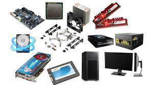

Cuando hablamos de Hardware, nos remitimos a la parte tangible de una computadora u ordenador, lo que podemos ver y tocar, estos elementos se pueden clasificar para comprender de forma más analitica cada elemento que forma parte del grupo hardware de PC, podemos encontrar lo que se llama gabiente que comunmente se lo denomia CPU, sin embargo sólo es la caj que contiene muchos elementos del sistema. luego tenemos perifericos (de entrada y salida) y dentro del gabiente encontramos placa madre, microprocesador, memoria RAM, ROM-BIOS, disco de almacenamiento, HD y SSD entro otros.
Tipos de ventas

ventas online ventas telefónicas. ventas por mayor y menor.